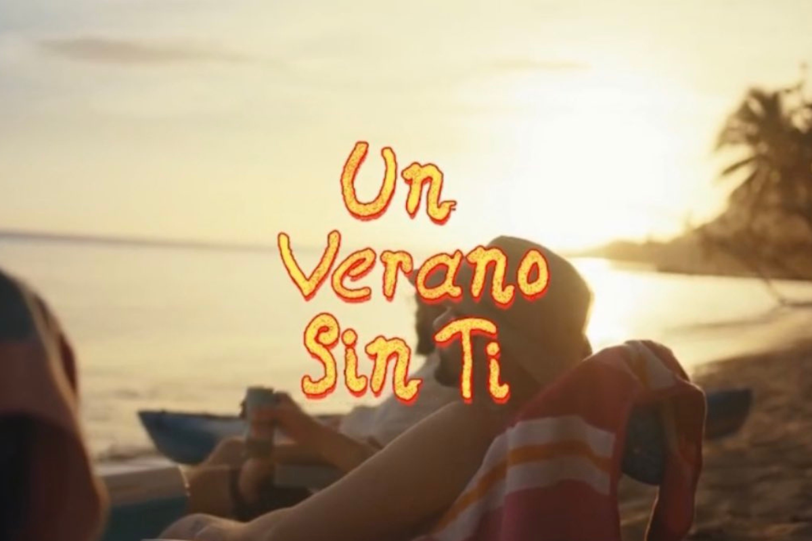

UN VERANO SIN TI
Un verano sin ti es el quinto álbum de estudio en solitario y sexto en general del rapero y cantante puertorriqueño Bad Bunny. Fue lanzado el 6 de mayo de 2022 por Rimas Entertainment, luego del lanzamiento de su disco anterior El último tour del mundo (2020). El álbum contiene veintitrés pistas. y cuenta con las colaboraciones de Chencho Corleone, Jhay Cortez, Tony Dize, Rauw Alejandro, Bomba Estéreo, The Marías y Buscabulla. Un verano sin ti, un éxito comercial y de crítica, debutó en la cima del Billboard 200 de Estados Unidos, marcando el segundo álbum número uno de Bad Bunny y el tercer álbum en español en encabezar la lista.
Composición
Un verano sin ti es principalmente un disco de reguetón, cumbia e indie pop impulsado por estilos musicales provenientes del Caribe, como el reggae, la bomba, el dembow, el mambo y la bachata. El álbum también contiene elementos de dancehall, dance pop, house y techno.
Comentarios de la crítica
Un verano sin ti fue recibido con elogios de la crítica. En Metacritic, que asigna una calificación normalizada de 100 a las reseñas de publicaciones profesionales, el álbum recibió una puntuación promedio de 86, según seis reseñas, lo que indica «aclamación universal».
Honrada con su etiqueta de «Mejor música nueva», Jennifer Mota de Pitchfork hace eco de los comentarios de Villa y escribe que el álbum es un «viaje coherentemente empaquetado a través de los diversos sonidos sinónimos de la región del Caribe: reguetón, reggae, bomba, dembow dominicano, mambo dominicano, y bachata, entre otros».
Desempeño comercial
Un verano sin ti debutó en el número uno en el Billboard 200 de Estados Unidos con 274 000 unidades equivalentes a álbumes, lo que la convierte en la semana más grande de 2022 para un álbum. Es el segundo álbum número uno de Bad Bunny y el segundo álbum íntegramente en español en encabezar el Billboard 200. El álbum también logró la semana de transmisión más grande para un álbum latino en la historia, acumulando 356.66 millones de transmisiones oficiales en los Estados Unidos, la mayor cantidad para cualquier álbum desde Certified Lover Boy de Drake en septiembre de 2021. El álbum alcanzó el número uno en la lista de álbumes españoles y ha recibido una certificación de triple platino por haber obtenido 120 000 unidades en el país. Un verano sin ti se convirtió en el primer álbum de Bad Bunny en llegar al top 10 en las listas musicales de Canadá, Italia, Holanda y Suiza.
Listado de canciones
Aquí tenemos el listado de canciones y en colaboracion con spotify tenemos una prueba gratuita de cada canción: